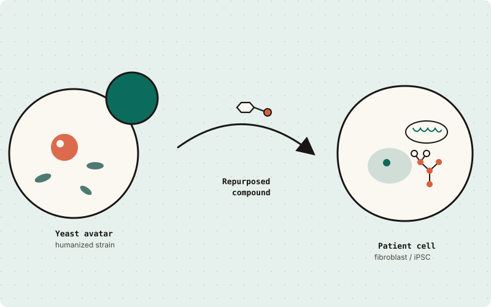
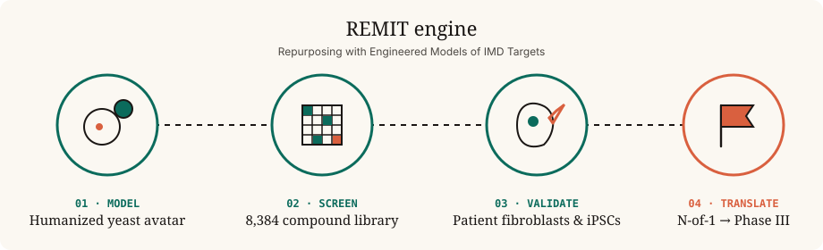

We’re a full-stack drug discovery and development company for inherited metabolic diseases — CDGs, mitochondrial disorders, GPI-anchor defects, tRNA-synthetase syndromes, and the long tail of ultra-rare metabolic biology.

Inherited metabolic diseases (IMDs) are individually ultra-rare but collectively enormous — about 15% of the world’s ~10,000 rare diseases. Most have a single known gene, a pediatric onset, and no approved therapy. They’re exactly the programs legacy pharma de-prioritizes — and exactly where a yeast-first, patient-partnered approach wins.
Our explicit goal: scale from a dozen active IMD programs today to several hundred over the next decade — a single- digit percent of the addressable IMD universe, but a transformative expansion over status quo.
Pharmacological deficiency models of every electron transport chain complex (CI–CV), N-glycosylation defects (PMM2, ALG11, DHDDS), GPI-anchor disorders (PIGN, PIGW), and aminoacyl-tRNA synthetases (NARS1, FARS2, MTAARS2…).
Every program is anchored by a specific family or foundation. The yeast screen, the patient-cell validation, the N-of-1 protocol, and the registrational trial — all on one shared timeline.
A parent-initiated N-of-1 study of a decades-old Japanese diabetic-neuropathy drug became a 40-patient Phase III at Mayo Clinic Minnesota in under three years for less than $5M. That cadence is the Perlara 3.0 standard.
“We went from a single child on compassionate-use epalrestat to a registrational trial in three years on less than $5M in patient-foundation capital. This is what community medicine looks like.”
Repurposing with Engineered Models of Inherited metabolic disease Targets. A four-stage engine: build the yeast avatar, screen a standardized library, validate in patient cells, advance through IND-enabling and trials.

Our working notebook is Ethan Perlstein’s Substack, Cure Odysseys, where each Cure Odyssey is a single disease, family, and yeast model moving together through the pipeline.
Six of twelve top yeast rescuers for SURF1 Leigh Syndrome reproduced in patient fibroblasts — the strongest yeast-to- human translation signal we’ve measured.
In GMPPA-CDG, loss of GMPPA causes runaway GMPPB and hypermannosylation. Two wrongs make a right: dosing a GMPPB inhibitor restores flux.
How a Japanese aldose-reductase inhibitor approved for diabetic neuropathy became a glycosylation-rescue drug candidate on its way to Mayo Clinic.